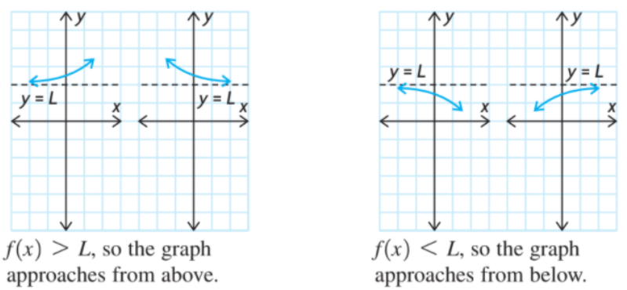
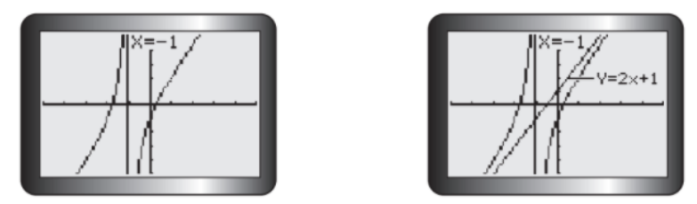
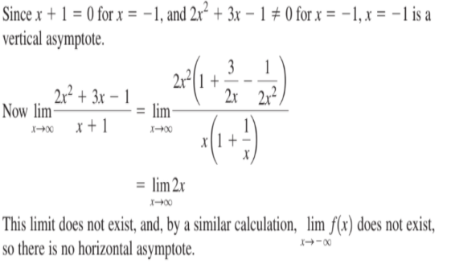
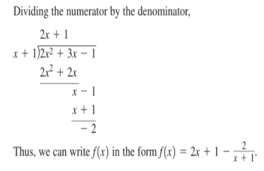
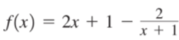
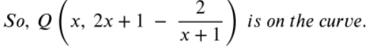
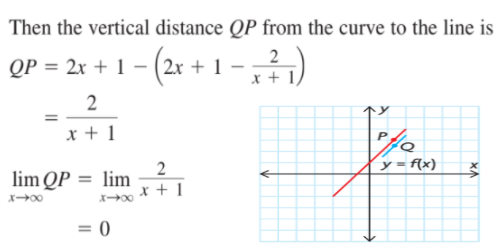
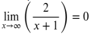
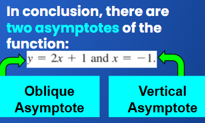

Horizontal and Oblique Asymptotes
Horizontal Asymptotes
The following graphs illustrate some typical situations:

Oblique Asymptotes

These are straight lines that are slanted and to which the curve becomes increasingly close. They occur with rational functions in which the degree of the numerator exceeds the degree of the denominator by exactly one.
Examples of Oblique Asymptotes
Determine the equations of all asymptotes of the graph of f(x)= 


Understanding Oblique Asymptote From the Problem Shown

Let’s consider the straight line y = 2x + 1 and the graph y = f(x).
For any value of x, point P (x, 2x+1) is on the line.


As x gets very large, the curve approaches the line but never touches it.
Therefore, the line is an asymptote of the curve.
Since  , the line is also an asymptote for large negative values of x.
